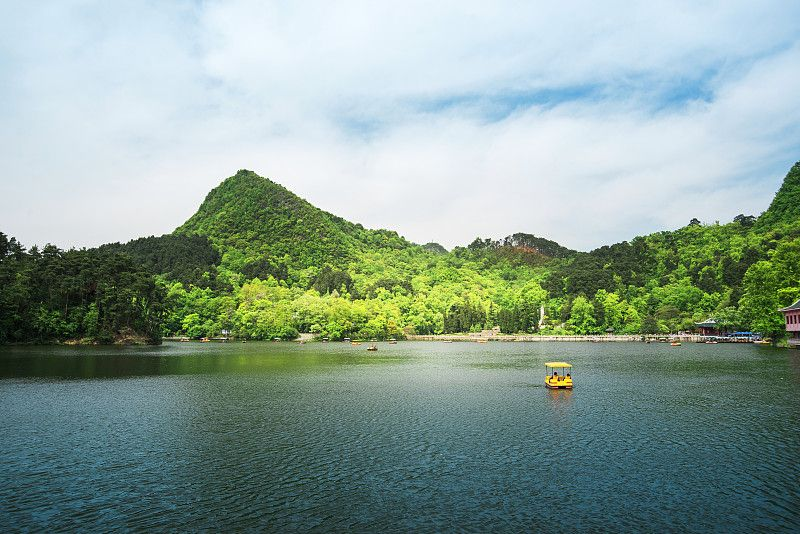
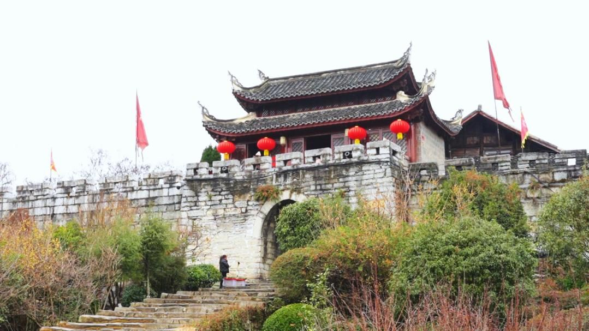
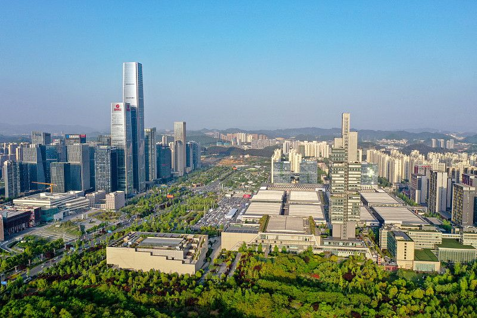

避暑之都 · 林城 ｜ 一册在手，边走边看
把森林搬进城市的黔灵山，与南明河上 400 年的甲秀楼，串成老城清爽一天。上午登山，傍晚河边

往南出城，上午走千年军镇青岩，下午钻天河潭的瀑布与溶洞。🚗 拼车/包车约 1-1.5h
两景点可同条路线串游，回到市区吃酸汤鱼。

不走累人的打卡节奏，去花溪吹河谷的风，到观山湖看城市天际线，夜宵摊收尾。松弛慢活

💡 辣度分级点单，礼貌跟店家说「微辣」通常更友好。
贵州「天无三日晴」，即便盛夏也有阵雨，随身伞+轻薄外套。
猴子会抢零食和手机，拿好随身物，勿主动投喂。
地铁 1/2/3 号线覆盖老城与机场方向；青岩、天河潭建议拼车或一日游包车。
部分景区票价随淡旺季浮动，出发前以官方小程序为准。
以贵阳为集散中心，高铁 1-2h 可直达安顺黄果树、荔波小七孔、铜仁梵净山，是很棒的黔程中转站。